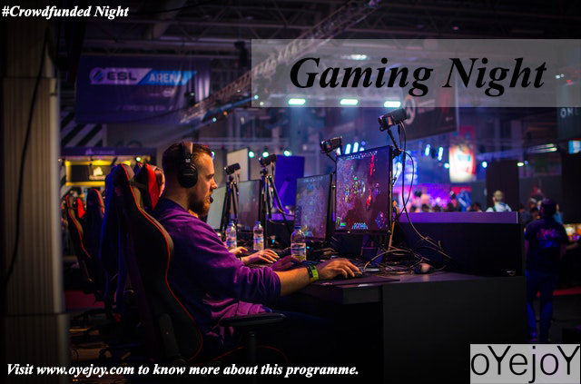

Game Night

Gaming Night offers the best online multiplayer battle gaming experience through the
tournament where you can compete with your friends and people participating in the
gaming night and get a chance to have “victory royale” and “chicken dinner” with the lively
presence of huge crowds.
What happens in a Tournament?
According to this, participants get a chance to play online gaming with the huge crowds
while enjoying the liveliness of spectators in real.
Who are the participants?
Participants are a bunch of interested people who volunteer in making the “Night” joyful
and happening.
How can you participate?
We release participation forms on our social media handles and also on oyejoy.com, right
after the registrations are completed. One just have to fill that form and we will contact you.
To stay updated, you can follow our social media and visit our website oyejoy.com
>
Eligibility- There is no certain eligibility criteria but the selection will solely be done on first
come first serve basis. Hence you are suggested to register as soon as possible.
Costs involved
We organize our events in such a way that the costs involved are far more less than any
typical event because most of the event is volunteer based which leads to cost cutting while
giving the best experience to the people.